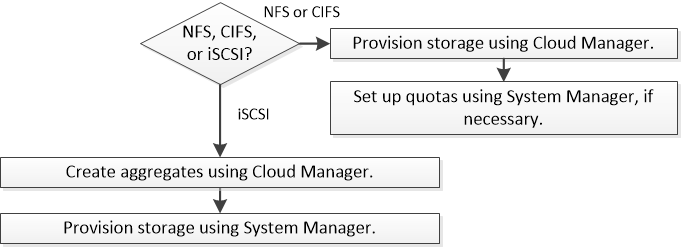

Solicitar cambios en el documento
Solicitar cambios en el documento Editar en GitHub
Editar en GitHub Guía del colaborador
Guía del colaboradorVaya a los documentos de la última versión.
Aprovisionar almacenamiento
Colaboradores
Puede aprovisionar almacenamiento NFS y CIFS adicional para sus sistemas Cloud Volumes ONTAP desde Cloud Manager gestionando volúmenes y agregados. Si necesita crear almacenamiento iSCSI, debe hacerlo desde System Manager.

|
Todos los discos y agregados deben crearse y eliminarse directamente desde Cloud Manager. No debe realizar estas acciones desde otra herramienta de gestión. De esta manera, se puede afectar a la estabilidad del sistema, se puede obstaculizar la capacidad de añadir discos en el futuro y generar potencialmente cuotas redundantes para proveedores de cloud. |

Creación de volúmenes de FlexVol
Si necesita más almacenamiento después de iniciar un sistema Cloud Volumes ONTAP, puede crear nuevos volúmenes de FlexVol para NFS o CIFS desde Cloud Manager.
Si desea usar CIFS en AWS, debe haber configurado DNS y Active Directory. Para obtener más información, consulte "Requisitos de red para Cloud Volumes ONTAP para AWS".
-
En la página Working Environments, haga doble clic en el nombre del sistema Cloud Volumes ONTAP donde desea aprovisionar los volúmenes de FlexVol.
-
Cree un nuevo volumen en cualquier agregado o en un agregado específico:
Acción Pasos Cree un nuevo volumen y deje que Cloud Manager elija el con el agregado
Haga clic en Añadir nuevo volumen.
Cree un nuevo volumen en un agregado específico
-
Haga clic en el icono de menú y, a continuación, haga clic en Avanzado > asignación avanzada.
-
Haga clic en el menú de un agregado.
-
Haga clic en Crear volumen.
-
-
Introduzca los detalles del nuevo volumen y, a continuación, haga clic en continuar.
Algunos de los campos en esta página son claros y explicativos. En la siguiente tabla se describen los campos que podrían presentar dificultades:
Campo Descripción Tamaño
El tamaño máximo que puede introducir depende en gran medida de si habilita thin provisioning, lo que le permite crear un volumen que sea mayor que el almacenamiento físico que hay disponible actualmente.
Control de acceso (solo para NFS)
Una política de exportación define los clientes de la subred que pueden acceder al volumen. De forma predeterminada, Cloud Manager introduce un valor que proporciona acceso a todas las instancias de la subred.
Permisos y usuarios/grupos (solo para CIFS)
Estos campos permiten controlar el nivel de acceso a un recurso compartido para usuarios y grupos (también denominados listas de control de acceso o ACL). Es posible especificar usuarios o grupos de Windows locales o de dominio, o usuarios o grupos de UNIX. Si especifica un nombre de usuario de Windows de dominio, debe incluir el dominio del usuario con el formato domain\username.
Política de Snapshot
Una política de copia de Snapshot especifica la frecuencia y el número de copias de Snapshot de NetApp creadas automáticamente. Una copia snapshot de NetApp es una imagen del sistema de archivos puntual que no afecta al rendimiento y requiere un almacenamiento mínimo. Puede elegir la directiva predeterminada o ninguna. Es posible que no elija ninguno para los datos transitorios: Por ejemplo, tempdb para Microsoft SQL Server.
-
Si ha elegido el protocolo CIFS y no se ha configurado el servidor CIFS, especifique los detalles del servidor en el cuadro de diálogo Crear un servidor CIFS y, a continuación, haga clic en Guardar y continuar:
Campo Descripción DNS Dirección IP principal y secundaria
Las direcciones IP de los servidores DNS que proporcionan resolución de nombres para el servidor CIFS. Los servidores DNS enumerados deben contener los registros de ubicación de servicio (SRV) necesarios para localizar los servidores LDAP de Active Directory y los controladores de dominio del dominio al que se unirá el servidor CIFS.
Dominio de Active Directory al que unirse
El FQDN del dominio de Active Directory (AD) al que desea que se una el servidor CIFS.
Credenciales autorizadas para unirse al dominio
Nombre y contraseña de una cuenta de Windows con privilegios suficientes para agregar equipos a la unidad organizativa (OU) especificada dentro del dominio AD.
Nombre NetBIOS del servidor CIFS
Nombre de servidor CIFS que es único en el dominio de AD.
Unidad organizacional
La unidad organizativa del dominio AD para asociarla con el servidor CIFS. El valor predeterminado es CN=Computers.
-
Para configurar Microsoft AD administrado de AWS como el servidor AD para Cloud Volumes ONTAP, debe introducir OU=equipos,OU=corp en este campo.
-
Para configurar los Servicios de dominio de Azure AD como servidor AD para Cloud Volumes ONTAP, debe introducir OU=equipos ADDC o OU=usuarios ADDC en este campo.https://docs.microsoft.com/en-us/azure/active-directory-domain-services/create-ou["Documentación de Azure: Cree una unidad organizativa (OU) en un dominio gestionado de Azure AD Domain Services"^]
Dominio DNS
El dominio DNS para la máquina virtual de almacenamiento (SVM) de Cloud Volumes ONTAP. En la mayoría de los casos, el dominio es el mismo que el dominio de AD.
Servidor NTP
Seleccione usar dominio de Active Directory para configurar un servidor NTP mediante el DNS de Active Directory. Si necesita configurar un servidor NTP con una dirección diferente, debe usar la API. Consulte "Guía para desarrolladores de API de Cloud Manager" para obtener más detalles.
-
-
En la página Usage Profile, Disk Type y Tiering Policy, elija si desea habilitar las funciones de eficiencia del almacenamiento, elija un tipo de disco y edite la política de organización en niveles, si es necesario.
Si necesita ayuda, consulte lo siguiente:
-
Haga clic en Ir.
Cloud Volumes ONTAP aprovisiona el volumen.
Si ha aprovisionado un recurso compartido CIFS, proporcione permisos a usuarios o grupos a los archivos y carpetas y compruebe que esos usuarios pueden acceder al recurso compartido y crear un archivo.
Si desea aplicar cuotas a volúmenes, debe usar System Manager o la interfaz de línea de comandos. Las cuotas le permiten restringir o realizar un seguimiento del espacio en disco y del número de archivos que usan un usuario, un grupo o un qtree.
Creación de volúmenes de FlexVol en el segundo nodo de una alta disponibilidad configuración
De forma predeterminada, Cloud Manager crea volúmenes en el primer nodo de una configuración de alta disponibilidad. Si necesita una configuración activo-activo, en la que ambos nodos sirven datos a los clientes, debe crear agregados y volúmenes en el segundo nodo.
-
En la página entornos de trabajo, haga doble clic en el nombre del entorno de trabajo de Cloud Volumes ONTAP en el que desea gestionar agregados.
-
Haga clic en el icono de menú y, a continuación, haga clic en Avanzado > asignación avanzada.
-
Haga clic en Agregar agregado y, a continuación, cree el agregado.
-
Para Home Node, elija el segundo nodo del par de alta disponibilidad.
-
Después de que Cloud Manager cree el agregado, selecciónelo y, a continuación, haga clic en Crear volumen.
-
Introduzca los detalles del nuevo volumen y, a continuación, haga clic en Crear.
Puede crear volúmenes adicionales en este agregado si es necesario.
|
|
En el caso de parejas de alta disponibilidad implementadas en varias zonas de disponibilidad de AWS, debe montar el volumen en clientes mediante la dirección IP flotante del nodo en el que reside el volumen. |
Creación de agregados
Puede crear agregados usted mismo o dejar que Cloud Manager lo haga por usted cuando cree volúmenes. La ventaja de crear los agregados usted mismo es que puede elegir el tamaño de disco subyacente, lo que le permite configurar el agregado para la capacidad o el rendimiento que necesita.
-
En la página entornos de trabajo, haga doble clic en el nombre de la instancia de Cloud Volumes ONTAP en la que desea gestionar agregados.
-
Haga clic en el icono de menú y, a continuación, haga clic en Avanzado > asignación avanzada.
-
Haga clic en Agregar agregado y, a continuación, especifique los detalles para el agregado.
Para obtener ayuda con el tipo de disco y el tamaño de disco, consulte "Planificación de la configuración".
-
Haga clic en Ir y, a continuación, haga clic en aprobar y adquirir.
Aprovisionar LUN de iSCSI
Si desea crear LUN iSCSI, debe hacerlo desde System Manager.
-
Las utilidades de host deben estar instaladas y configuradas en los hosts que se conectan a la LUN.
-
Debe haber registrado el nombre del iniciador de iSCSI del host. Debe proporcionar este nombre cuando cree un igroup para la LUN.
-
Antes de crear volúmenes en System Manager, debe asegurarse de contar con un agregado con espacio suficiente. Debe crear agregados en Cloud Manager. Para obtener más información, consulte "Creación de agregados".
Estos pasos describen cómo utilizar System Manager para la versión 9.3 y posteriores.
-
Haga clic en almacenamiento > LUN.
-
Haga clic en Crear y siga las indicaciones para crear la LUN.
-
Conéctese al LUN desde sus hosts.
Para ver instrucciones, consulte "Documentación de utilidades de host" para su sistema operativo.
Uso de volúmenes de FlexCache para acelerar el acceso a los datos
Un volumen FlexCache es un volumen de almacenamiento que almacena en caché datos de lectura NFS de un volumen de origen (o origen). Las lecturas posteriores a los datos almacenados en caché hacen que el acceso a los datos sea más rápido.
Puede usar volúmenes de FlexCache para acelerar el acceso a los datos o para descargar el tráfico de volúmenes con un acceso frecuente. Los volúmenes FlexCache ayudan a mejorar el rendimiento, en especial cuando los clientes necesitan acceder a los mismos datos en repetidas ocasiones, ya que los datos pueden ofrecerse directamente sin tener que acceder al volumen de origen. Los volúmenes FlexCache funcionan bien con cargas de trabajo del sistema que requieren una gran cantidad de lecturas.
Cloud Manager no proporciona gestión de volúmenes de FlexCache en este momento, pero se puede usar la interfaz de línea de comandos de ONTAP o ONTAP System Manager para crear y gestionar volúmenes de FlexCache:
A partir del lanzamiento de la versión 3.7.2, Cloud Manager genera una licencia de FlexCache para todos los nuevos sistemas de Cloud Volumes ONTAP. La licencia incluye un límite de uso de 500 GB.

|
Para generar la licencia, Cloud Manager necesita acceder a https://ipa-signer.cloudmanager.netapp.com. Asegúrese de que se puede acceder a esta URL desde el firewall. |